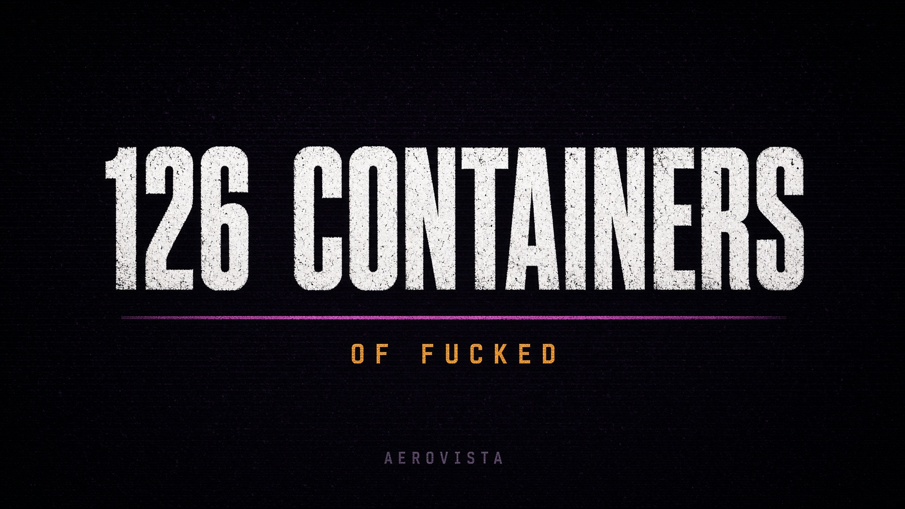
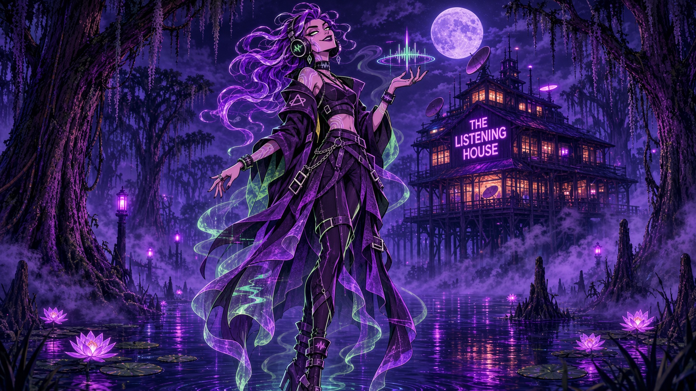

/126
Extended series archive
Episode catalog, character Bible, and links into the expanded source snapshot.
Open archiveBoth NXCore variants are preserved under their original folder names and presented here as GitHub Pages editions.

Episode catalog, character Bible, and links into the expanded source snapshot.
Open archive
Self-contained alternate ByteCast experience with interactive screenplay presentation.
Open alternate